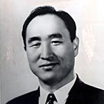
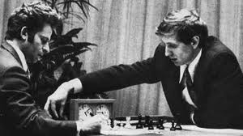

1972
1972 1 jan. Årets motto är "Skyddandet av frontlinjen i den himmelska striden."
TV-intervju Sun Myung Moon med Al Cap Al kommenterar "this is the kind of Messiah I want"
Alla hans tal (1972-1975) på engelska skrivs och distribueras med rubriken Master Speaks.
Svenska missionären Friedhilde skriver i tidskriften Way of The World Se sid 21 & 96.
. Unification Thought Institute grundas.

8 jan. Han organiserar 'One World Crusade' i Japan,Canada och Amerika.
19 jan. Kirsti & Ellen kommer som 1:a missionärer till Finland. Ellen tysk syster, Kirsti finsk syster som i Tyskland översatt Principerna till finska
3 feb. - Tal hålls i sju viktiga städer: Lincoln Center New York, Philadelphia,
11 mars Baltimore, Washington, Los Angeles, San Francisco och Dorkry.
20 mars Tal till allmänheten i London. Avslutas den 22:a.
28 mars Tal till allmänheten i Essen Tyskland.
3 apr. Unification Theological Seminary grundas.
Historisk profetia om kommunismens absoluta fall!
April 1972 Paris, Frankrike
Likt Rebecka blev Tamar gravid med tvillingar som kämpade i hennes livmoder. När Tamar bad, måste Herren ha
framträtt och sagt samma sak som han hade sagt till Rebecka, "Två nationer är i ditt livmoder och två
människor inom dig kommer att separeras; ett folk kommer att vara starkare än det andra, och den äldre kommer
att tjäna de yngre i 2000 bibliska sa Gud. Födelsetiden kom och den första sonen, Zera, drog fram handen.
Barnmorskan band en röd tråd runt handleden.
Detta var en symbolisk förutsägelse att under tiden för de Yttersta dagarna skulle kommunismen, en satanisk
ideologi, representerad av förgen röd, först dyka upp innan Guds rike upprättas. Efter 7000 bibliska år - 6000
års av återupprättelsens historia plus årtusendet, i tiden för avslutande - kommer kommunismen att falla under
det 70:e året.
Detta är meningen med året 1978. Kommunismen, som började 1917, kunde upprätthålla sig ungefär 60 år och nå
sin topp. Så 1978 är gränslinjen och därefter kommunismen kommer att minska; 70:e året kommer det att
förstäras helt.
Detta är sant.
Därför är det nu dags för människor som studerar kommunismen att överge den.
8 maj Han återvänder till Korea.
7 jun Koreanskt korståg (en rörlig witnessing grupp) startar i Korea.
jul-aug Världen: 
Fischer vann och avslutade därmed 24 är av sovjetisk dominans i VM-schack.
Intressant kuriosa; Bobby Fischer blev i början av 60-talet intresserad av kyrkan "Worldwide Church of God"
ledd av den karismatiske amerikanen Herbert Armstrong.(1960 var äret för Sanna föräldrars bröllop)
Var han förberedd för Sanna Föräldrar? och Välsignelsen...kanske. Han ville inte ha sex, eftersom han inte
var gift. Han hånade värdsligt liv och pornografi och han försökte noggrant följa 10 Guds bud.
Herbert Armstrong profeterade Messias återkomst 1972, (just 1972 hade återkomstens Herre Sun Myung Moon
kommit (1971) till USA, för att föra missionen där till seger).
Bobby dog 2008, 64 är gammal. (Ett schackbröde har 64 rutor.)
26 okt 1972 - grundandet av Sunmoon University, Wonhwa-gwan Korea.
startade som Unification (Tongil) Seminary
21 nov. Hans fjärde världsturne startar.
23 nov.- Den första Vetenskapskonferensen hålls i New York, på Waldorf Astoria hotell.
Den andra översättningen till svenska av Principerna publiceras.
baserad på Young Oon Kims engelska
original.
Findhorn Foundation är en skotsk välgörenhetsstiftelse registrerad 1972, bildad av den andliga gemenskapen i Findhorn Ecovillage, en av de största andliga gemenskaperna i Storbritannien. Det har varit hem för tusentals invånare från mer än 40 länder. Stiftelsen driver utbildningsprogram för Findhorn-gemenskapen och hyser ett 40-tal samhållsföretag som Findhorn Press och ett center för alternativmedicin.
1972 Cliff Richard sjunger in låten Won't you please come back again
året då den nye 3:e Adam - återkomstens Herre påbörjar sin mission i USA!